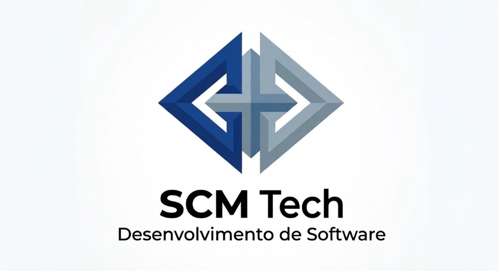

Simulado Oficial: 60 Questões Abertas
Abrange 100% da apostila. Suas respostas são salvas em tempo real para você responder com calma em até 3 dias.
Progresso das Respostas:
0 de 60 respondidas (0%)

Abrange 100% da apostila. Suas respostas são salvas em tempo real para você responder com calma em até 3 dias.